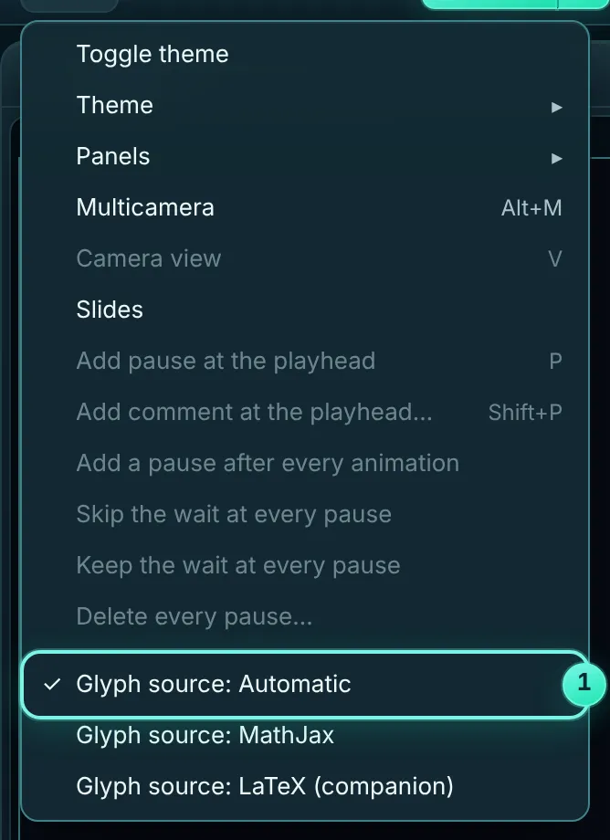

The companion
The editor works on its own. The companion is a small program that you start on your machine to give it more: exact LaTeX glyphs, font text, cleaner video, and rendering with your own Manim.
What it adds
| Without the companion | With it | |
|---|---|---|
| Formulas | Drawn by MathJax in the browser: close to LaTeX, but its glyphs can come in another order than Manim’s. | Compiled by LaTeX itself, the way Manim does it: Manim’s glyphs, in Manim’s order. |
| Exported Python | The scene finds the glyphs by position when it runs. | The scene names the glyphs by index, with no helper (The generated Python). |
| Font text | Drawn as placeholder boxes in the Preview and in videos. | Shaped by the Pango of your own Manim: its real glyphs. Linux for now. |
| Video | Encoded by the browser. | Also by ffmpeg: MP4, WebM, ProRes and GIF, with sound. |
| Manim | Nothing: you run the exported Python yourself. | Render with Manim runs it for you, with your own ManimCE or ManimGL. |
Writing, animating and exporting Python never needs it. Each row is an extra, and each one
is on only when the companion has what it needs: health, below, tells what.
Without the companion says what the editor does with none,
and the one place where that shows in the result: formulas that Manim splits into other glyphs
than MathJax.
Starting it
The companion is one Python file, companion/mfe_companion.py in the
repository. It uses only Python’s standard library and needs Python 3.10 or newer. For exact
glyphs it also needs latex and dvisvgm on the PATH
(TeX Live, MacTeX or MiKTeX); ffmpeg is optional.
python3 companion/mfe_companion.py serveIt prints one line, for example mfe-companion 1.7.0 listening on
http://127.0.0.1:7799 (LaTeX sandbox: bubblewrap), and keeps running. Leave it so, and
stop it with Ctrl+C in its terminal; on Linux and macOS, closing the
terminal stops it in order too, and clears its temporary files.
You do not tell the editor where it is. The editor looks at
http://127.0.0.1:7799 every five seconds until it finds it, every fifteen once
it has, and each time its window gets the focus. How you opened the editor decides whether
it may talk to the companion:
| The editor is opened… | Start the companion with |
|---|---|
With npm run dev (an address on localhost) | serve |
From the built app/dist/index.html, as a file | serve --allow-file-origin |
| By the companion itself | serve --app app/dist, then open http://127.0.0.1:7799/app/ |
The last one is the simplest: the companion serves the built app, and the app talks to it on its own address, whatever the port. The second option has a catch, explained under Security.
To use your Manim, give the companion the Python of each environment that has it:
python3 companion/mfe_companion.py serve --app app/dist \
--ce-python ../manim_ce/venv/bin/python \
--gl-python ../manim_gl/venv/bin/python \
--allow-manim-renderFont text needs the path of the library the project is made for (both, to check an export
for the other one). Render with Manim needs the path of the library it renders with, and
--allow-manim-render.
Is it working?
The right end of the menu bar says which renderer the formulas really use.
- Renderer: LaTeX: every formula is drawn from an exact LaTeX render.
- Renderer: MathJax: the formulas are drawn by MathJax. This is also what a new formula gets while no companion is there.
- Renderer: Pango: the only texts are font texts, shaped.
- Renderer: mixed: some formulas are exact and some are not yet, or a font text is still a row of boxes beside formulas.
Hover the badge for the details: how many formulas are exact, how many use MathJax, and the state of the companion. With none running it says No companion at http://127.0.0.1:7799. Start it for exact LaTeX rendering: python3 companion/mfe_companion.py serve, with the command that fits how you opened the editor. With one running it gives its version, the tools it found (latex, dvisvgm, ffmpeg) and the Manims it can reach. Help ▸ About gives the version too.

- Glyph source: Automatic uses the companion’s LaTeX whenever it is online, and MathJax otherwise.
- Glyph source: MathJax always uses MathJax, even with a companion.
- Glyph source: LaTeX (companion) asks for LaTeX only.
When the companion comes up, the editor draws every formula again with LaTeX: the badge passes from Renderer: MathJax through mixed to Renderer: LaTeX within moments.
Checking what you have: health
When something of the companion does not work, start here. It does not listen on any port and changes nothing:
python3 companion/mfe_companion.py health
python3 companion/mfe_companion.py health --ce-python ../manim_ce/venv/bin/pythonThe report has a section for each thing the companion does. A line starts with
[ok] when the piece is there, [--] when it is missing and
[!!] when it is there and cannot be used. Under each line that is not
[ok] come what it costs and the command that gets it for your system. Here are
two examples, with made-up versions and paths: the whole report of a Linux machine that has
everything but ManimGL, and the part that matters in the report of a Mac without
ffmpeg.
Manim Formula Editor companion 1.7.0
Python 3.12.3 at /usr/bin/python3 (linux)
LaTeX: the exact glyphs of formulas and LaTeX texts
[ok] latex: pdfTeX 3.141592653-2.6-1.40.26 (TeX Live 2024) (/usr/bin/latex)
[ok] dvisvgm: dvisvgm 3.2.2 (/usr/bin/dvisvgm)
[ok] sandbox: bubblewrap (LaTeX reads nothing of yours but its own files)
ffmpeg: Export > Video > Companion (ffmpeg), and the sound of Render with Manim
[ok] ffmpeg: 6.1.1 (/usr/bin/ffmpeg)
[ok] MP4 (H.264): libx264, sound aac
[ok] WebM (VP9): libvpx-vp9, sound libopus
[ok] MOV (ProRes): prores_ks, sound aac
[ok] GIF: gif
note: a video is written in /tmp (15.5 GiB free) while it is encoded, 4 GiB at most;
`serve --max-video-gib N` gives another limit (1 to 64), and TMPDIR another folder.
Manim: Render with Manim, and the shapes of font text
[ok] ManimCE 0.22.1: /home/you/manim-ce/venv/bin/python
[ ] ManimGL: not checked. Add --gl-python PATH (or set MFE_GL_PYTHON) to check it too.
note: Render with Manim is off unless `serve` gets --allow-manim-render; it would run inside the bubblewrap sandbox.
Font text: Text (font), shaped with the Pango of each Manim
[ok] with ManimCE: 312 font families
Everything that was checked is ready here.
The same as the app reads it, in JSON: health --jsonffmpeg: Export > Video > Companion (ffmpeg), and the sound of Render with Manim
[--] ffmpeg: not found on PATH
Without it the companion encodes no video; the app still exports with the browser's encoder.
To get it: brew install ffmpeg
Then open a new terminal, so that it is on PATH, and run this command again.
1 thing marked [--] or [!!] above: each says what it costs and how to get it.health --json prints what the editor itself reads from the companion. With no
--ce-python or --gl-python the report checks LaTeX and ffmpeg and
says how to ask for the rest.
The options of serve
| Option | What it does |
|---|---|
--app DIR | Also serves the built app in DIR (app/dist) at http://127.0.0.1:<port>/app/. The app then reaches the companion on its own address. |
--allow-file-origin | Also accepts the app opened from a file. Any web page can then reach the companion: see Security. Environment: MFE_ALLOW_FILE_ORIGIN=1. |
--ce-python PATH, --gl-python PATH | The Python of an environment with ManimCE, and with ManimGL. For font text and Render with Manim. Environment: MFE_CE_PYTHON, MFE_GL_PYTHON. |
--allow-manim-render | Turns on Render with Manim, which runs the Python code it receives. In a sandbox where one is available. Environment: MFE_ALLOW_MANIM_RENDER=1. |
--manim-timeout SECONDS | The time limit of one render (600 by default). |
--max-video-gib N | The largest video one export through ffmpeg may write, in GiB: a whole number from 1 to 64 (4 by default). A larger video fails and says so: see How large a video can be. |
--sandbox-gpu | Lets the sandboxed Manim use the graphics card. Without it Mesa draws in software. Environment: MFE_SANDBOX_GPU=1. |
--no-sandbox | Turns bubblewrap off: LaTeX, Render with Manim, the pass of ffmpeg that adds the sound to its video, and the font-text worker then run with all your permissions. Environment: MFE_NO_SANDBOX=1. |
--no-disk-cache | Keeps the cache in memory only. Formulas are otherwise cached on disk, so each is compiled once. |
--port PORT | The port (7799 by default). The editor looks at 7799, so change it only together with --app. |
-v, --verbose | Logs every request. |
Exact glyphs
For each formula the companion writes the same TeX document that Manim writes (a
MathTex for ManimCE, a Tex for ManimGL), compiles it with
latex, converts it with dvisvgm, and sends the drawing back with
one label per glyph. The editor draws that. So the glyphs are Manim’s own: their order,
their shapes, their places. A LaTeX text (a Text (LaTeX) object) is compiled the
same way, in text mode.
- A formula takes a moment the first time. The result is cached, so it does not again.
- A LaTeX error comes back with its message and its line, and the Creator shows it.
- The packages of a formula and the project’s LaTeX preamble (File ▸ Project settings…) are part of the document.
Help ▸ Engine inspector… shows the glyphs a formula gets from each renderer, side by side, so you can see how MathJax and LaTeX differ for it.
Font text
A font text is set by Manim’s own text engine, Pango. The companion asks it, through the
Python you gave it, for the shape of every glyph, so that the editor draws the text as Manim
will. It needs --ce-python or --gl-python, and a system that
has Pango 1.50 or newer, Cairo, Fontconfig and ManimPango: that is Linux for now. It starts
the first time a text needs it, never before.
Without it a font text is a row of placeholder boxes. It still exports to Python, and
Render with Manim draws the real glyphs. health has a Font text section
that says whether it works.
ffmpeg
With ffmpeg on the PATH of the machine that runs the companion,
Export ▸ Video… offers Companion · ffmpeg: MP4
with x264, WebM with VP9, MOV with ProRes, and GIF, with the sound of the project in all of
them but the GIF. health lists each format with the encoder it needs
(libx264, libvpx-vp9, prores_ks, gif; for
sound aac and libopus). All of this is in
Exporting video.
How large a video can be
While it is encoded, a video is written in the temporary folder of the machine that runs the companion. What a long video needs is room on that disk, not memory. Two limits keep an export from filling it:
- One video is at most 4 GiB. A larger one is never delivered cut short:
the export fails, and the dialog says the limit and what you can do. To give the
companion another limit, start it with
--max-video-gib N, a whole number of GiB from 1 to 64, for exampleserve --max-video-gib 16. The Export video dialog shows the limit of the companion it found. - 1 GiB of that disk stays free. An export is not begun, and one that is running is stopped, when less is left. This covers Render with Manim too, whose video has no size limit of its own. The message names the folder.
To write the videos on another disk, start the companion with the environment variable
TMPDIR naming a folder there:
TMPDIR=/data/tmp python3 companion/mfe_companion.py serve --max-video-gib 16Started with a limit that the disk of the folder cannot hold, the companion says so at
once. health shows the folder, the room it has and the limit.
Rendering with Manim
The editor sends the scene it would export as Python, and the companion has your Manim
render it. It is off until you start the companion with --allow-manim-render
and give it at least one of --ce-python and --gl-python.
- The code runs in a folder of its own, with a minimal environment, and the companion
stops it after
--manim-timeoutseconds. - On Linux with bubblewrap it runs in a sandbox: the file system read-only, your home folder empty, no network. Elsewhere it runs with all your permissions, and the dialog says so.
- The result is an MP4. With sound in the project, ffmpeg adds the mix to it as AAC, in a sandbox of the same kind whenever Manim ran in one.
Security
The companion runs programs on text that a web page sends, so it is locked down. What to know:
- It listens on
127.0.0.1only, and refuses requests whose address is not127.0.0.1orlocalhost, and pages whose origin is not a local one. Only pages served from your own machine can use it. --allow-file-originwidens that. A page opened from a file has no origin, and neither does a frame sandboxed inside any website, so with the option on any web page can send requests to the companion. Serve the app with--appinstead, and leave the option off.- LaTeX runs without shell escape, in a temporary folder, for at most fifteen seconds.
From TeX Live 2026 on, LaTeX can no longer be forbidden from reading files, so on Linux
with bubblewrap the companion runs LaTeX in a sandbox that hides your home folder and has
no network. Without bubblewrap — macOS, Windows, or Linux without it — LaTeX
can read what you can, and the only protection is the origin rules above.
servesays which case you are in when it starts. - Render with Manim runs code. It is the reason for
--allow-manim-render. Use it only with pages you trust. --appserves regular files under its folder, nothing else: no listing, no hidden files, no way out of the folder. It is a convenience for your own machine, not a web server.
Linux, macOS and Windows
health gives the install command for your system. These are the ones it
gives, and what differs.
When the editor does not see it
- The badge still says MathJax, and the tooltip says no companion. Is it
running? Is the page opened the way the table above says? A built app opened as a file needs
--allow-file-originor--app. Cannot listen on 127.0.0.1:7799. Another program, or another companion, has the port. Stop it.- It runs, but the formulas are still MathJax. Run
health: a[--]onlatexordvisvgmmeans LaTeX is not on the path of the terminal that started it. Open a new terminal after installing it. Also look at the View menu: Glyph source: MathJax keeps MathJax even with a companion. - A Manim is not found.
health --ce-python PATHsays why, and gives the command that shows the error. - The video dialog greys out ffmpeg or Manim. It says why. Then
healthsays how to put it right.